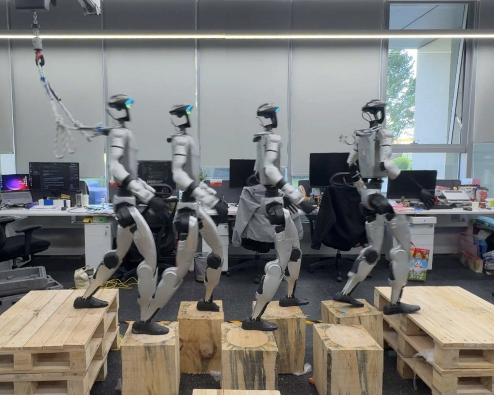
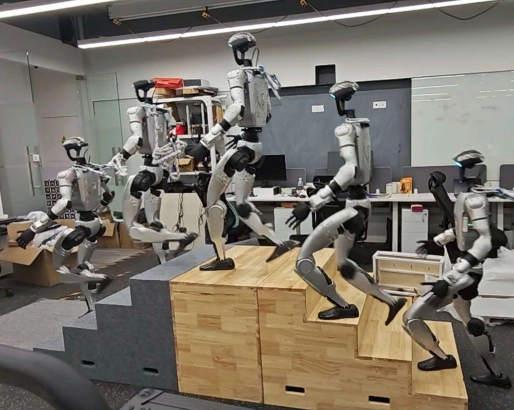
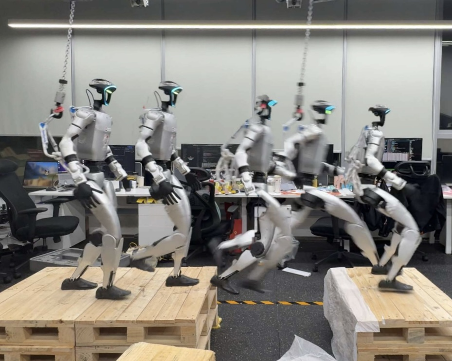

Problem
Locomotion as a POMDP: proprioception history, egocentric depth, and velocity command. Foothold-constrained terrain makes a single infeasible step nearly irreversible for bipeds.
1D-Robotics · 2Institute of Automation, Chinese Academy of Sciences · 3Beijing University of Posts and Telecommunications · 4Soochow University
A co-trained recurrent world model gives a future-aware contact prior to PPO from a single onboard depth image—no foothold labels, no terrain map—so a Unitree G1 can clear gaps, stairs, and stepping stones in sim and on hardware.

One predictive latent, one depth stream, three sparse foothold classes.
Foothold-constrained terrain is ground where feasible foot contacts are sparse, discontinuous, or geometrically restricted—stepping stones, gaps, and narrow stair treads. On such terrain, one bad step often leaves little room to recover, so reactive policies that rely only on the immediately visible foothold tend to fail.
We present World Model Augmented Visual Locomotion (WM-LOCO), which co-trains a recurrent world model with PPO end-to-end. Conditioned on proprioception and a single onboard depth image, the world model forms a predictive latent that guides the policy as a future-aware contact prior, without explicit foothold labels.
In simulation, WM-LOCO succeeds on gaps and stepping stones where a matched baseline fails completely, and matches stair success while improving stride efficiency and reducing pelvis acceleration. The same method deploys onboard a physical humanoid from depth alone and traverses all three terrain classes with an average success rate of 95%.
A recurrent world model co-trained with PPO as a future-aware contact prior.
Locomotion as a POMDP: proprioception history, egocentric depth, and velocity command. Foothold-constrained terrain makes a single infeasible step nearly irreversible for bipeds.
Recurrent state-space model with memory ht and stochastic latent zt. Reconstructs proprioception, depth, and reward; the KL term keeps the prior close to the posterior, so ht stays predictive before the current observation arrives.
Optimize PPO clipped surrogate together with LWM in one update. Only the deterministic memory ht—not the stochastic latent zt—reaches the policy, as fWMt alongside its own proprioception history, command, and depth inputs. No imagination rollouts at inference, no foothold labels.
Shared stair-boundary, riser-penetration, and sequential tread-contact terms teach legal contacts without giving the baseline a different objective than WM-LOCO.

Figure 3 · WM-LOCO framework: a policy block (left) and a Dreamer-style world-model block (right). The policy consumes its own proprioception history, velocity command, and depth image together with the world-model memory feature fWMt. The PPO baseline removes only the world-model block.
Success rates in IsaacLab simulation at three difficulty levels, with push and domain randomization detached.
Least constrained · riser 9.2 / 12.8 / 18.8 cm
Sparse · gap width 0.4 / 1.0 / 2.0 m
Most constrained · stone edge 33 / 30 / 25 cm
PPO (no WM) WM-LOCO (ours)
| Terrain | Difficulty | PPO ↑ | WM-LOCO ↑ |
|---|---|---|---|
| Stairs | Easy | 87.0% | 94.2% |
| Medium | 91.4% | 95.7% | |
| Hard | 91.3% | 92.0% | |
| Gap | Easy | 0.0% | 98.0% |
| Medium | 0.0% | 100.0% | |
| Hard | 0.0% | 90.0% | |
| Stepping stones | Easy | 0.0% | 87.0% |
| Medium | 0.0% | 88.3% | |
| Hard | 0.0% | 78.2% |
Table 1 · Simulation success rate (center of mass crossed the goal line within 45 s), best per row highlighted. Each cell is a single pinned-difficulty evaluation with push and domain randomization detached, at least 50 episodes per (method, terrain, difficulty). On gaps and stairs, PPO is the architecturally matched baseline; on stepping stones it is the no-world-model ablation of the same architecture. On both sparse classes it never reaches the goal.
On stairs both methods reach similar success rates, but WM-LOCO walks more efficiently and more smoothly. Gains below are relative to PPO across Easy / Medium / Hard.
Unitree G1 · Intel RealSense D435-modelled depth · Jetson Orin · no offboard map or estimator.
Stepping stones (0.25–0.30 m top faces), stairs (0.15 m riser / 0.25 m tread), and a 0.8 m gap.
Reproduces simulated contact behavior across the three classes on the physical Unitree G1, with a 95% average success rate. Larger gaps were not tested, for safety.


Onboard deployment of trained WM-LOCO on Unitree G1 across the three foothold-constrained classes covered in this paper.
We deployed WM-LOCO on the D-Robotics S600 chip and ran a live stage demo at the S600 launch event — one of the first public live-stage demonstrations of a humanoid traversing stepping stones.
Live stage recording from the D-Robotics S600 launch — Unitree G1 on stepping stones.
If WM-LOCO is useful in your research, please cite our paper.
@misc{liu2026wmloco,
title = {World Model Augmented Visual Locomotion for
Humanoids on Foothold-Constrained Terrain},
author = {Liu, Yuxi and Han, Lijun and Wang, Ziming and
Zhang, Ao and Yang, Cong and Sui, Wei},
year = {2026},
howpublished = {arXiv preprint}
}wei.sui@d-robotics.cc